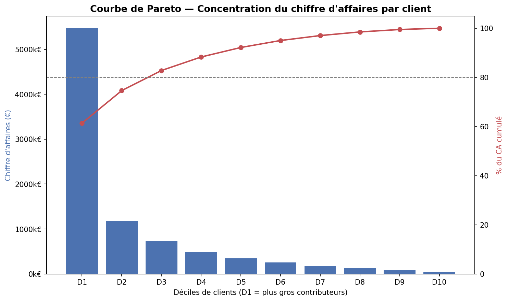
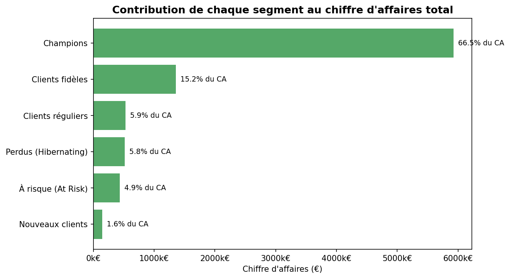
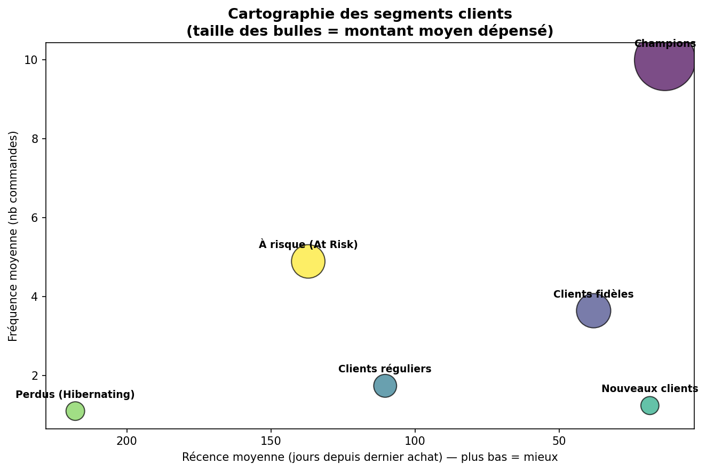

Qui sont les clients qui font vivre l'entreprise ?
Segmentation de 4 338 clients d'un e-commerçant britannique à partir de 397 884 transactions, pour prioriser les actions marketing et de rétention.
Un site e-commerce dispose d'un historique de transactions (~542 000 lignes) mais n'a aucune segmentation client pour prioriser ses actions marketing et CRM.
MissionIdentifier les clients à plus forte valeur, quantifier la concentration du chiffre d'affaires, et détecter les clients à risque de churn pour orienter une stratégie de rétention basée sur les données.
ActionNettoyage rigoureux (diagnostic qualité, exclusion des annulations et valeurs aberrantes), construction d'une segmentation RFM (règles métier validées par un clustering K-Means non supervisé), analyse de Pareto, restitution via 3 visuels conçus pour une audience direction.
Résultat26,1% des clients génèrent 80% du chiffre d'affaires. Le segment "Champions" (26,3% des clients) concentre 66,5% du CA. 433 237 € de chiffre d'affaires historique identifiés comme récupérables via une campagne de réactivation ciblée.


« Un segment à forte valeur historique mais inactif depuis plus de 90 jours représente 433 K€ de CA récurrent — une campagne de réactivation ciblée est recommandée en priorité. »

Stack technique
Python · Pandas · NumPy · Scikit-learn (K-Means) · Matplotlib / Seaborn. Code structuré en pipeline modulaire testé de bout en bout (src/), en plus du notebook exploratoire.